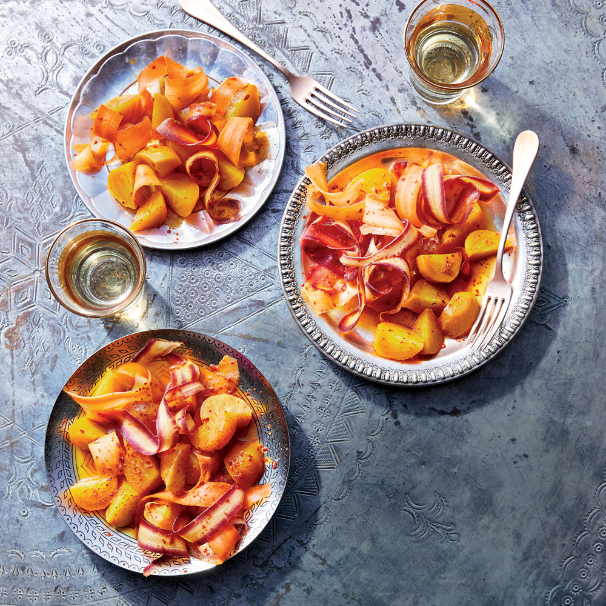
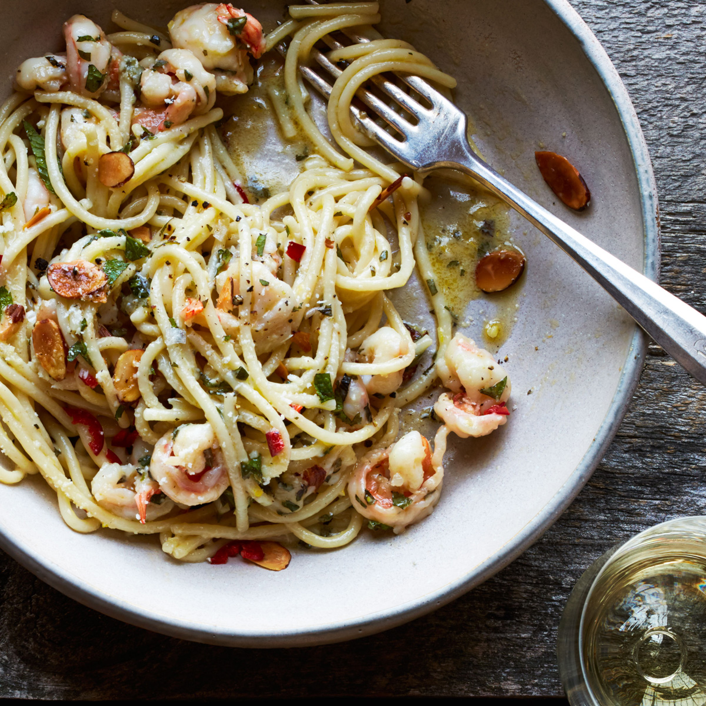

Menu
Aimee Olexy’s lemony, cream-based scones are light, moist and laced with pieces of chewy candied ginger.

This golden salad from chef Biju Thomas marinates beets and carrots in fresh lemon and Korean red pepper flakes. The lemon perks up the sweet, earthy vegetables with acidity, while the gochugaru adds just the right amount of sweet heat and color.
This tender, lemon-scented almond cake is topped with roasted rhubarb, but is equally delicious with any kind of fresh or roasted fruit, like roasted strawberries, fresh orange segments, or roasted plums.

Roman chef Angelo Troiani riffs on the classic spaghetti ajo, ojo e peperoncino (garlic, oil and chile), embellishing it with shrimp, lemon, pecorino, almond and mint. It's simple, delicious and crowd-pleasing.